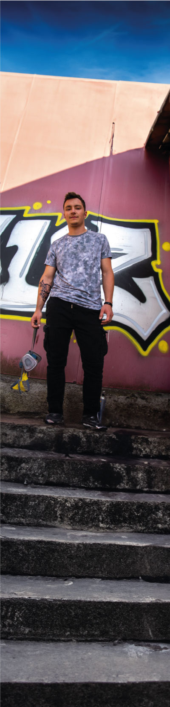

Invité
Nous sommes ravis de vous présentez notre invité d'honneur pour le Street Jam Festival, le célèbre artiste graffeur Tetra. Originaire de fribourg en Suisse a commencé à expérimenter avec les bombes aérosols à l'âge de 14 ans et a depuis créé une réputation internationale pour son style unique et expressif. Son travail est influencé par la culture hip-hop, la street culture et l'art urbain contemporain, et est souvent caractérisé par des couleurs vives, des formes organiques et des détails saisissants. Tetra est une figure emblématique de la scène graffiti, et son travail a été présenté dans des expositions du monde entier. En plus de son travail de graffeur, il est également un mentor pour la jeune génération d'artistes urbains, organisant des ateliers et partageant son expérience avec la communauté. Nous sommes honorés d'accueillir Tetra en tant qu'invité d'honneur de notre festival urbain annuel, et nous sommes impatients de voir son talent en action lors de notre atelier de graffiti interactif. Les participants auront l'occasion d'apprendre directement de lui, de découvrir son processus créatif et de s'inspirer de son travail unique.

Horaires:
-
09h00-10h00:
Inscriptions et accueil des participants -
10h00-10h30:
Démo de skateboard par des professionnels -
10h30-11h30:
Atelier d'initiation au skateboard pour les débutants -
11h30-12h30:
Session de skateboard libre pour les participants -
12h30-13h30:
Pause -
13h30-14h00:
Concours de skateboard "Meilleure figure" pour les participants -
15h00-15h30:
Démo de skateboard par des professionnels